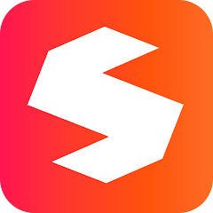

01우선 소개
온디스크
PC·모바일 콘텐츠 탐색[확실] 공식 안내에서 확인한 특징
- 공식 홈페이지에서 영화·방송·애니·만화·웹툰 카테고리를 안내합니다.
- iOS 앱 안내에 보관함·찜한자료·내자료 기능이 소개돼 있습니다.
[추정] 오티티보라의 추천 이유
여러 장르를 살펴보고, 구매한 자료와 관심 자료를 나누어 관리하려는 분의 첫 비교 후보로 추천합니다.
이용 전 체크 앱 설치 가능 기기, 작품별 이용료와 포인트 사용 범위를 확인하세요.
내게 필요한 기능부터, 가입 전 확인할 조건까지.
10개 서비스를 같은 틀로 비교해 보세요.
공식 공개 안내 확인
운영자 우선 소개 · 공식 정보와 추천 의견 분리
여러 장르를 살펴보고, 구매한 자료와 관심 자료를 나누어 관리하려는 분의 첫 비교 후보로 추천합니다.
이용 전 체크 앱 설치 가능 기기, 작품별 이용료와 포인트 사용 범위를 확인하세요.
모바일에서 콘텐츠를 이용하면서 다운로드 전용 앱과 문의 경로를 함께 살펴보려는 분께 추천합니다.
이용 전 체크 기기별 앱 지원 범위와 개별 작품의 이용 조건을 먼저 확인하세요.
번호는 소개 순서입니다. 서비스명을 누르면 자세한 이유로 이동합니다.
| 순서 | 서비스 | 공식 안내 확인 항목 | 추천 관점 · 편집 의견 |
|---|---|---|---|
| 01 | 온디스크 우선 소개 | 장르별 메뉴 · 자료 관리 | PC와 모바일에서 장르별 탐색과 자료 관리를 함께 |
| 02 | 케이디스크 우선 소개 | 다운로드 전용 앱 · 상담 | 다운로드 전용 앱과 고객지원 경로를 함께 확인 |
| 03 | 위디스크 | 찜한자료 · 화면 전송 안내 | 모바일 메뉴와 화면 전송 안내를 살펴볼 때 |
| 04 | 파일조 | TOP100 · 스트리밍 | 인기 목록에서 관심 콘텐츠를 탐색할 때 |
| 05 | 미투디스크 | 1:1 문의 · 원격지원 안내 | 고객지원과 이용 공지를 먼저 살펴볼 때 |
| 06 | 파일캐스트 | 모바일 감상 · 정액관 안내 | 모바일 감상과 이용권 조건을 함께 비교할 때 |
| 07 | 꿀파일 | 영상·읽을거리 · 쿠폰등록 | 영상과 읽을거리, 쿠폰 조건을 함께 살펴볼 때 |
| 08 | 스마트파일 | 화질 선택 · 바로보기 | 화질 선택과 모바일 데이터 사용을 고려할 때 |
| 09 | 싸다파일 | 모바일 카테고리 · 설정 안내 | 모바일 메뉴와 다운로드 설정을 확인할 때 |
| 10 | 파일썬 | 저장 폴더 안내 · 출석 이벤트 | 앱 저장 기능과 출석·쿠폰 조건을 살펴볼 때 |
[확실] 공식 기능 안내의 존재를 확인한 비교입니다. 실제 속도·보안성·만족도를 시험하거나 점수화하지 않았습니다.
후순위가 품질 열위를 의미하지는 않습니다.
모바일 이용 메뉴와 화면 전송 관련 안내를 함께 확인하고 싶은 분의 비교 후보입니다.
이용 전 체크 메뉴 표시는 모든 기기와 작품의 기능 지원을 보장하지 않습니다.
인기 목록에서 관심 콘텐츠를 찾은 뒤, 스트리밍과 다운로드 이용 방식을 비교하려는 분께 추천합니다.
이용 전 체크 TOP100은 파일조 내부 목록이며 전체 시장의 인기 순위가 아닙니다.
서비스 이용 중 문의할 곳과 저작권 관련 공지를 먼저 확인하려는 분의 비교 후보입니다.
이용 전 체크 원격지원 범위와 상담 가능 시간은 문의 전에 확인하세요.
개별 이용과 이용권 방식의 차이를 살펴보고, 모바일 감상 방식도 함께 비교하려는 분께 추천합니다.
이용 전 체크 정액관의 대상 콘텐츠와 별도 과금 여부를 확인하세요.
영상과 읽을거리 카테고리를 함께 둘러보고, 쿠폰 조건도 따로 확인하려는 분의 비교 후보입니다.
이용 전 체크 쿠폰 액면보다 사용 대상·유효기간·제외 콘텐츠를 먼저 확인하세요.
모바일 데이터와 저장 공간을 고려해 화질 선택 기능을 먼저 살펴보려는 분께 추천합니다.
이용 전 체크 실제 선택 가능한 화질과 이용료는 작품·기기에 따라 확인하세요.
카테고리 구성과 모바일 다운로드 설정 안내를 함께 확인하려는 분의 비교 후보입니다.
이용 전 체크 서비스 이름만으로 최저가로 판단하지 말고 실제 결제 조건을 비교하세요.

모바일 저장 기능과 앱 권한을 확인하고, 출석·쿠폰 조건을 비교하려는 분께 추천합니다.
이용 전 체크 앱 호환성·저장 권한과 이벤트의 실제 적용 조건을 확인하세요.
순서와 비교 항목은 다릅니다. 온디스크·케이디스크 우선 소개 방침을 적용한 편집 목록이며, 아래 항목의 점수를 합산해 순위를 낸 것은 아닙니다. 나머지 서비스도 같은 항목을 읽어보고 자신의 이용 방식에 맞게 선택하도록 정리했습니다.
출처는 공식 홈페이지와 운영사가 게시한 앱 소개입니다. 이용 후기나 성능 실험을 대신하지 않으며, 확인한 사실에서 나아간 추천 해석은 ‘[추정] 추천 이유’로 표시했습니다.
장르별 메뉴, 인기 목록, 찜한자료·보관함처럼 내가 사용할 기능이 안내돼 있는지 봅니다.
PC·모바일 안내, 전용 앱, 스트리밍·다운로드 기능을 확인하고 기기별 지원 조건을 살펴봅니다.
포인트 숫자보다 유효기간·사용 대상·별도 요금·정기결제 조건을 확인하는 것을 권합니다.
고객센터, 이용약관, 저작권 안내를 확인합니다. 안내가 있다는 이유만으로 모든 게시물의 적법성을 보증하지는 않습니다.
오티티보라는 온디스크·케이디스크를 우선 소개하는 운영 편집·홍보 방침을 적용합니다. 각 카드에는 공식 안내로 확인한 기능과 그 기능을 추천하는 편집 의견을 따로 적었습니다. 1·2번은 시장점유율이나 객관적 성능 우위를 뜻하지 않습니다.
표시된 숫자만으로는 비교하기 어렵습니다. 사용 가능한 콘텐츠, 유효기간, 별도 결제 항목과 자동결제 여부를 공식 안내에서 함께 확인하는 것을 권합니다. 이 페이지에서는 조건이 달라질 수 있는 혜택 금액을 고정 보장하지 않습니다.
아닙니다. 웹하드 순위는 서비스 비교이고, 콘텐츠ZONE은 별도의 작품 소개입니다. 순위에 포함됐다고 특정 작품의 제공이나 판권 계약을 확인했다는 뜻은 아닙니다.
이 목록은 오티티보라의 편집 순서입니다. 기능 안내는 같은 항목으로 읽어볼 수 있게 정리했지만, 숫자 순서는 점수 합산이나 외부 통계로 계산하지 않았습니다. 뒤에 소개된 서비스가 품질이 낮다는 의미도 아닙니다.
작품 제공 여부와 이용 요금은 해당 서비스의 공식 안내가 기준입니다.